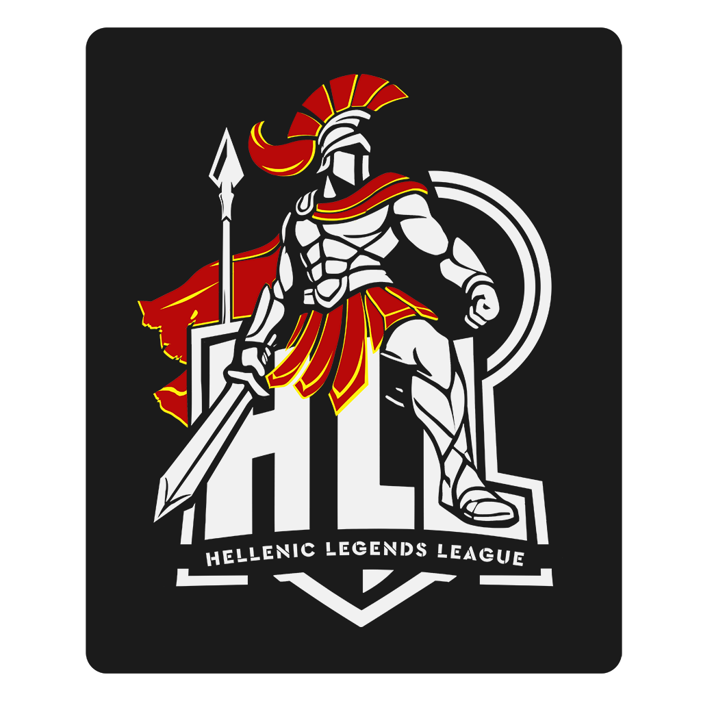

HLL Broadcast
The full control panel: tournaments, teams, live graphics, OBS / vMix, and PNG export.

HLL BroadcastWindows 11 · x64From match day to your feed
Live broadcast graphics and social posts in one local app. Create your tournament, add your teams, and export PNGs on your own PC.
Download for Windows .exeInstaller v1.0.0 · 16 November 2026
No Node.js or Git setup. Updates install automatically when you open the app. Microsoft Edge handles local PNG export.
One install. Two shortcuts.
Save HLL-Broadcast.exe to your PC.
Open the file. It downloads Node.js and the program, installs the parts, then opens HLL. Keep your internet connection on for the first install.
If SmartScreen says “Windows protected your PC”, choose “More info” → “Run anyway”. This installer is not code-signed.
The full control panel: tournaments, teams, live graphics, OBS / vMix, and PNG export.
The social control panel for creating and exporting posts and stories. Uses the same local tournaments and data.
HLL stays in the Windows system tray while its server runs. Open either edition, check for updates, or choose Quit there. Your first install starts with an empty tournament database.